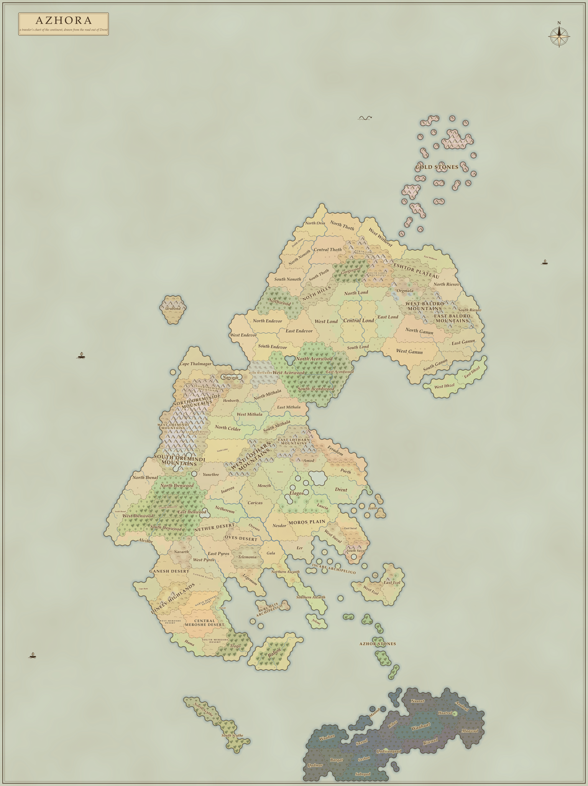

Explore the World
Begin as Teresod in Minora with the full atlas revealed. Explore freely with the developer mounts.
Free exploration · No active war or settlement simulationExplore, test combat, or develop a living world. Saved journeys stay separate.
New runs use this mode's save slot. Choose Continue to keep your saved journey. Save before returning to the main menu.
Preparing Minora...
The country is prepared as you explore.Encounter ended. Review the result before continuing.
Paused while you read.
Explore at your own pace. Your position and discovered map are kept when you save.
Save before leaving if you want to keep this journey.
On foot
Horse: WASD, Shift to canter.
Flight: WASD, Space climbs, Ctrl descends, Shift boosts, Tab turbo, G lands. Right-drag to look.
Arrive on foot. New scenery may take a moment to load. Atlas-only regions are listed but have no 3D destination yet.
All map views. Turn off to return to your discoveries. Mounts and reveal are temporary; land before saving.
Train in the empty muster camp outside Minora. Space dodges; hold A or D to dodge sideways. R retries; Esc returns you to your original location on foot. Campaign, discoveries and saved game are unchanged.
Replaces the unsaved run. Rides a horse over the bridges to Ovesos, dismounts, and intercepts East's reinforcements. Travel at 1x; waiting and aftermath at 20x. Shows the campaign map before the ride, at the battle, and through the outcome. Normal-speed combat; short preparation and result pauses. Your saved game is untouched.
Developer transfer to Caricas; helps West at 20x campaign speed. Movement keys or P stop either test and give you control. Neither test saves automatically.

Walk to discover the map · Scroll to zoom · Drag to pan · Political information shows the existing opening setup